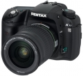
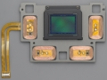
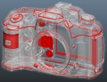
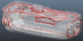
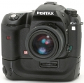
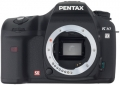
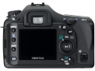
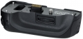

器材库 > APS及其以下画幅可换镜头数码相机 > K10D

规格总览
产品类型
APS画幅可换镜头数码相机
发布日期
2006-09-13
厂家推荐价格
120,000.00 （日元）
停产
是
影像规格
影像传感器
CCD
影像传感器尺寸
23.5 x 15.7mm
总像素
1075万
有效像素
1020万
影像处理器
PRIME（PENTAX Real Image Engine）
最大解像度
3872 × 2592
静态图像尺寸
3872 × 2592; 3008 × 2000; 1824×1216
静态图像格式
JPEG, RAW, RAW+JPEG
静态图像质量
压缩：JPEG基准（超精细、精细、经济）；压缩：RAW（PEF）；非压缩：RAW（DNG）
防抖系统
防抖（SR）系统，最多4档快门速度级差补偿效果
除尘系统
除尘（DR）系统：1、防止灰尘粘附的SP涂层；2、SR系统的清洁抖动将灰尘抖落
镜头和对焦
镜头卡口
Pentax AF
兼容镜头
Pentax KAF2- 、KAF- 、和KA- 卡口镜头
对焦系统类型
TTL相位匹配11点宽区自动对焦系统（SAFOX VIII）
对焦点
11点
对焦模式
单次AF（带对焦锁定），连续AF和手动对焦可用
AF辅助灯
有
手动对焦
支持
曝光控制
测光模式
中央重点测光, 多分区评价测光, 点测光
测光范围
0EV~21EV
曝光模式
P（程序自动曝光）, B门, 感光度优先, A（光圈优先自动曝光）, S（快门速度优先自动曝光）, M（手动测光曝光）, X速度
快门类型
电子控制，纵走式，焦平面快门
快门速度
1/4000 - 30秒，B门；闪光同步速度：1/180秒
曝光补偿
±3EV以1/2EV级调整
自动曝光锁
有
自动包围曝光
在±0.5EV、±1.0EV、±1.5EV、±2.0EV（0.5EV级差）或±0.3EV、±0.7EV、±1.0EV、 ±1.3EV、±1.7EV、±2.0EV（0.3EV级差）范围内拍摄3或5幅图像
ISO感光度
100, 200, 400, 800, 1600
白平衡
日光, 白炽灯, 闪光灯, 阴天, 荧光灯, 阴影, 自动, 手动
自拍
12秒, 2秒
连拍
每秒3张，最多9张RAW 或 6张RAW+JPEG
闪光灯
内置闪光灯
弹出式
闪光模式
P-TTL, 高速同步, 无线遥控
闪光指数
GN 11 (ISO 100)
闪光补偿
-2 至 +1EV以1/2EV级调整
取景器/显示屏
取景器
眼平五棱取景器
取景范围
95%
取景放大倍率
0.95倍
屈光度调节范围
-2.5 ～ +1.5
取景器信息
AF框、单点AF框、焦点指示（红色加亮）
景深预视
有
LCD类型
彩色TFT LCD
LCD尺寸
2.5英寸
LCD像素
21万
文件输入/输出
存储卡
SD/SDHC
数据接口
USB2.0
视频/音频接口
Video 输出 (NTSC/PAL)
支持打印协议
PictBridge, DPOF
电源
电池
D-LI50充电式锂离子电池
续航能力
约500张
外接电源
AC变压器（选购件）
机身规格
颜色
黑色
尺寸
141.5 ×101 ×70mm
重量
710g
其它
用户自选功能
32项自定义可编程功能
支持语言
中文（简体）, 中文（繁体）, 英语, 日语, 荷兰语, 法语, 德语, 意大利语, 韩语, 葡萄牙语, 俄语, 西班牙语, 瑞典语
附件
I-USB17 USB接线，I-VC28视频接线，O-ST53肩带，ME取景器盖，D-LI50可充电锂电池，D-BC50电池充电器，AC电源线，S-SW55软件包，眼罩Fp，热靴盖Fk
软件
PENTAX PHOTO Browser™ 3 ， PENTAX PHOTO Laboratory™ 3
备注
机身72个零部件都经过严格的密封处理，具有可靠的防尘、防水结构
449379122014-10-10 22:204.44 分
操作性 4.50功能性 4.00美观性 5.00趣味性 5.00耐用性 4.50性价比 4.00解像力 4.00色彩还原 4.50
cdtmkj2013-08-19 00:054.94 分
操作性 5.00功能性 5.00美观性 5.00趣味性 4.50耐用性 5.00性价比 5.00解像力 5.00色彩还原 5.00
党来了2013-04-24 16:214.88 分
操作性 5.00功能性 4.50美观性 5.00趣味性 4.50耐用性 5.00性价比 5.00解像力 5.00色彩还原 5.00
odyssey672013-01-18 00:144.5 分
操作性 5.00功能性 4.00美观性 4.50趣味性 4.50耐用性 4.50性价比 4.50解像力 4.50色彩还原 4.50
欢乐英雄2012-07-07 17:034.63 分
操作性 4.00功能性 4.50美观性 5.00趣味性 4.50耐用性 5.00性价比 5.00解像力 4.00色彩还原 5.00
xtb8882012-06-11 17:344.38 分
操作性 4.50功能性 4.50美观性 4.00趣味性 4.00耐用性 4.00性价比 5.00解像力 4.50色彩还原 4.50
fitaveo2011-09-05 13:234.69 分
操作性 4.50功能性 4.50美观性 4.50趣味性 4.50耐用性 5.00性价比 5.00解像力 4.50色彩还原 5.00
斗大的杯子2011-07-12 19:304.69 分
操作性 5.00功能性 5.00美观性 5.00趣味性 5.00耐用性 4.50性价比 4.50解像力 4.50色彩还原 4.00
冥顽蛇蝎2011-06-30 19:324.75 分
操作性 5.00功能性 5.00美观性 5.00趣味性 5.00耐用性 4.00性价比 4.00解像力 5.00色彩还原 5.00
米兰的死忠2011-05-27 06:314.38 分
操作性 4.50功能性 4.00美观性 4.00趣味性 3.50耐用性 5.00性价比 5.00解像力 4.50色彩还原 4.50
lkmjxt2011-05-24 19:475 分
操作性 5.00功能性 5.00美观性 5.00趣味性 5.00耐用性 5.00性价比 5.00解像力 5.00色彩还原 5.00
骊泉居士2011-04-09 08:524.69 分
操作性 4.50功能性 4.50美观性 5.00趣味性 5.00耐用性 5.00性价比 4.50解像力 4.50色彩还原 4.50
铁凤凰2011-03-18 21:594.63 分
操作性 4.50功能性 4.50美观性 5.00趣味性 5.00耐用性 5.00性价比 5.00解像力 4.00色彩还原 4.00
playboyroyal2011-02-11 09:124.63 分
操作性 5.00功能性 4.50美观性 5.00趣味性 4.50耐用性 3.00性价比 5.00解像力 5.00色彩还原 5.00
笑影2010-10-30 22:014.38 分
操作性 4.50功能性 4.50美观性 4.50趣味性 4.50耐用性 4.00性价比 4.50解像力 4.00色彩还原 4.50
bbaaggiioo2010-10-14 11:114.69 分
操作性 4.50功能性 4.50美观性 4.50趣味性 4.50耐用性 5.00性价比 5.00解像力 4.50色彩还原 5.00
pnp12010-05-16 08:484.69 分
操作性 5.00功能性 4.50美观性 4.00趣味性 4.50耐用性 4.50性价比 5.00解像力 5.00色彩还原 5.00
simplyred11072010-03-16 09:464.81 分
操作性 4.50功能性 4.50美观性 5.00趣味性 4.50耐用性 5.00性价比 5.00解像力 5.00色彩还原 5.00
manicwj2010-03-04 09:374.81 分
操作性 5.00功能性 4.50美观性 5.00趣味性 5.00耐用性 5.00性价比 5.00解像力 4.50色彩还原 4.50
产品图 / 样片
K10D-01

K10D-02

K10D-03

K10D-04

K10D-05

K10D-06

K10D-07

K10D-08
评测 / 相关文章
该产品暂无存档的评测文章
相关文章
- ［试用］温习宾得——从K10D开始 （原站已下线）
- ［资讯］解决宾得数码单反机反光板乱跳问题 （原站已下线）
- ［资讯］修理K10D反光板不能弹起或放下的故障 （原站已下线）
- ［资讯］Pentax准专业级DSLR：K10D （原站已下线）
- ［影像］宾得K10D夜游伦敦 （原站已下线）